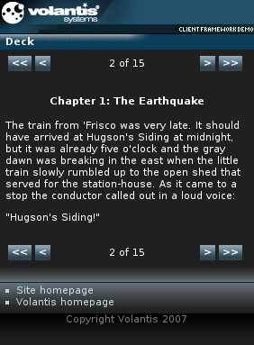

The Deck widget presents data as a series of pages. The content of the widget may be specified directly on an XDIME page, or can be downloaded from an external source via AJAX.

<widget:deck id="deck" style="mcs-deck-mode:switch"> <widget:load src="service/deck" when="defer"/> </widget:deck>
<widget:load src="service/deck" when="defer"/>
<widget:button action="deck#first-page"><<</widget:button> <widget:button action="deck#previous-page"><</widget:button> <widget:button action="deck#next-page">></widget:button> <widget:button action="deck#last-page">>></widget:button>
<widget:display property="deck#displayed-page-number"/> of <widget:display property="deck#pages-count"/>
<?xml version="1.0" encoding="UTF-8"?>
<response:response xmlns="http://www.w3.org/2002/06/xhtml2"
xmlns:mcs="http://www.volantis.com/xmlns/2006/01/xdime/mcs"
xmlns:widget="http://www.volantis.com/xmlns/2006/05/widget"
xmlns:response="http://www.volantis.com/xmlns/2006/05/widget/response">
<response:head>
<response:link rel="mcs:theme" href="/themes/main.mthm"/>
</response:head>
<response:body>
<response:deck total-pages-count="14">
<widget:deck-page>
<h1 style="text-align:center">Dorothy and the Wizard in Oz</h1>
<h2 style="text-align:center">by L. Frank Baum</h2>
</widget:deck-page>
<widget:deck-page>
<h4 style="text-align:center">Chapter 1: The Earthquake</h4>
<p>The train from 'Frisco was very late. It should have arrived at
Hugson's Siding at midnight, but it was already five o'clock
and the gray dawn was breaking in the east when the little train slowly
rumbled up to the open shed that served for the station-house.
As it came to a stop the conductor called out in a loud voice:</p>
<p>"Hugson's Siding!"</p>
</widget:deck-page>
...
</response:deck>
</response:body>
</response:response>
<?xml version="1.0" encoding="UTF-8"?>
<html xmlns="http://www.w3.org/2002/06/xhtml2"
xmlns:mcs="http://www.volantis.com/xmlns/2006/01/xdime/mcs"
xmlns:template="http://www.volantis.com/xmlns/marlin-template"
xmlns:widget="http://www.volantis.com/xmlns/2006/05/widget"
xmlns:event="http://www.w3.org/2001/xml-events">
<head>
<title>Deck w/AJAX</title>
<link rel="mcs:theme" href="/themes/main.mthm"/>
<link rel="mcs:layout" href="/layouts/main.mlyt"/>
</head>
<body>
<template:apply href="templates/demo-main.xdtpl">
<template:binding name="title" value="Deck w/AJAX (switch mode)"/>
<template:binding name="content">
<template:complexValue>
<div>
<table style="width:100%">
<tr>
<td style="text-align:left">
<widget:button action="deck#first-page"><<</widget:button>
<widget:button action="deck#previous-page"><</widget:button>
</td>
<td style="text-align:center">
<widget:display property="deck#displayed-page-number"/> of
<widget:display property="deck#pages-count"/>
</td>
<td style="text-align:right">
<widget:button action="deck#next-page">></widget:button>
<widget:button action="deck#last-page">>></widget:button>
</td>
</tr>
</table>
</div>
<widget:deck id="deck" style="mcs-deck-mode:switch">
<widget:load src="service/deck" when="defer"/>
</widget:deck>
<div>
<table style="width:100%">
<tr>
<td style="text-align:left">
<widget:button action="deck#first-page"><<</widget:button>
<widget:button action="deck#previous-page"><</widget:button>
</td>
<td style="text-align:center">
<widget:display property="deck#displayed-page-number"/> of
<widget:display property="deck#pages-count"/>
</td>
<td style="text-align:right">
<widget:button action="deck#next-page">></widget:button>
<widget:button action="deck#last-page">>></widget:button>
</td>
</tr>
</table>
</div>
</template:complexValue>
</template:binding>
</template:apply>
</body>
</html>
| Name | Purpose |
|---|---|
| div | A section used to add extra structure to documents. Style sheets can be used to control the presentation. |
| response:deck | Allows a Deck widget to load its content from an external source. |
| table | Defines a table. |
| td | A cell in a table containing data. |
| tr | Denotes a row within a table. |
| widget:button | A general purpose element, used by widgets which need a button-like control. |
| widget:deck | Defines a Deck widget. |
| widget:deck-page | Defines a single page in a Deck widget. |
| widget:display | An inline widget element used to display some text content. It may be associated with a widget property. In such cases, the displayed content represents the value of the selected property. |
| widget:load | Controls the loading of a widget's contents in relation to the containing page. |
| Core attributes | Attributes that are common to XDIME 2 elements. |